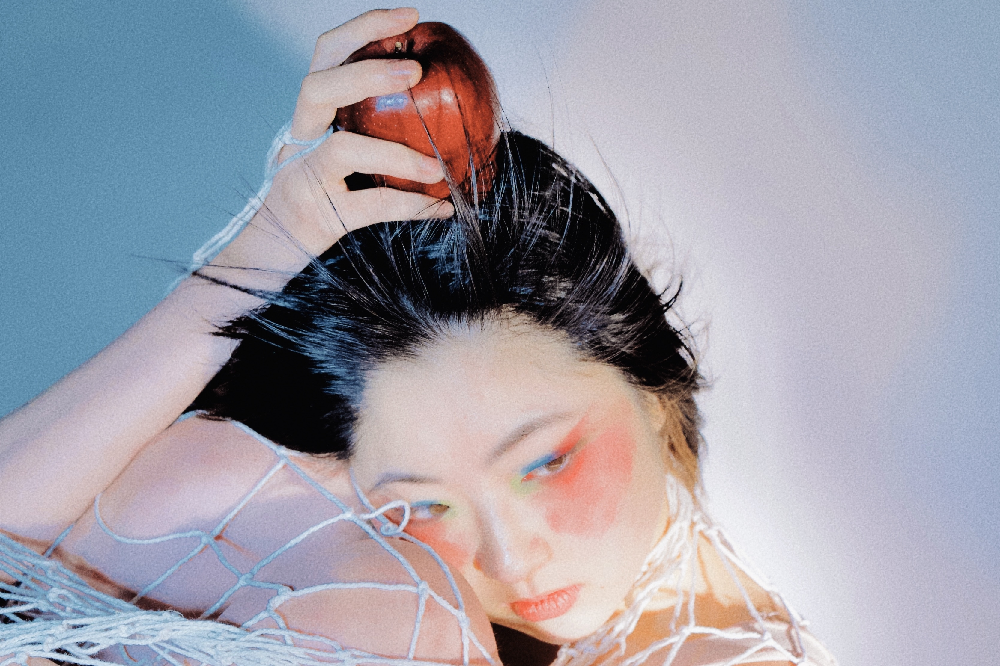
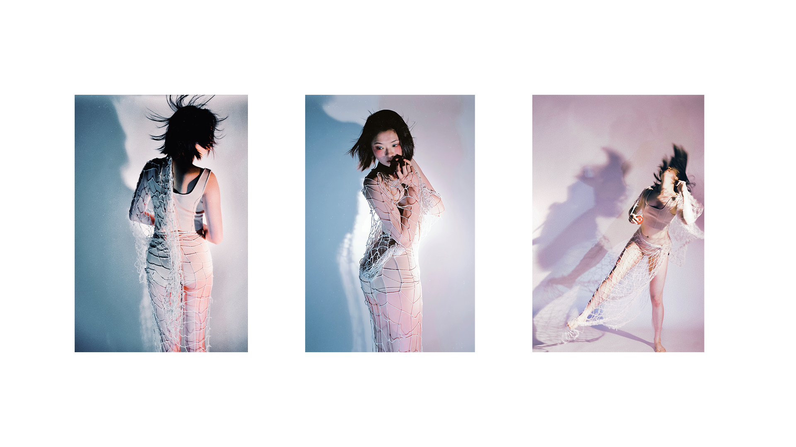
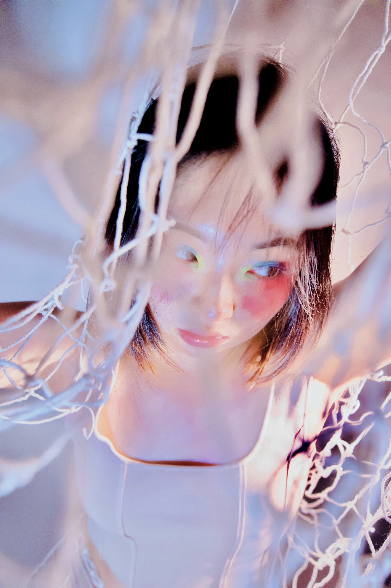

02
Choreography Project
Directed visual language for a movement-based performance, focusing on gesture, rhythm, and atmospheric composition.



Project Overview
This project was developed as a visual study of movement, body language, and atmosphere. Rather than treating the images as simple documentation, the direction focused on how gesture, lighting, and framing could create a cinematic sense of rhythm.
The visual language was shaped through contrast, texture, and negative space, allowing the performance to feel suspended between stillness and motion.